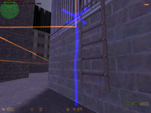
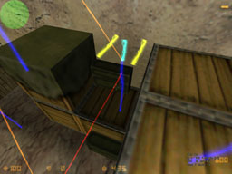
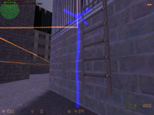
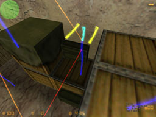

Additionally paths will be added where u run along and where are no paths at that time.
What are Waypoints ? :
Waypoint files
( *.wpj ) contain the knowledge of each bot of a map. The Joebot is able to
play CS without waypoints, but it'll just run to the next wall and follow the
wall . A good waypoint file is therefore the basis for a good CS - match.
The bots will navigate the map with their primary goal based on waypoints but also rather short distance actions like seeking cover are based on waypoints. Sometimes even grenade throwing is at least partly based on waypoints. Therefore not only a good coverage of the map for large scale navigation is needed, but also hiding places behind crates are useful to waypoint.
Till now all the waypoint stuff has to be done manually except adding starting
points. In the next time, I'll try to implementate a system, which can learn
the map.
General Information :
Red Line : A path
leading away
Yellow Line : A path leading toward u
Team specific waypoint means, that this waypoint exists only for one team. The other team cannot use it.
Ladder Waypoints : Set at least each a waypoint at the ends of a ladder. There can be more waypoints in between, but they need not.
(UNITS : A normal player model in Counterstrike is 75 Units high, normal running speed is 250 Units per second, I think)
| Commands | |
|---|---|
| waypoint on/off | Displays/Hides Waypoints |
| waypoint add | adds waypoint with no special flags, if there aren't any special entities around |
| waypoint addstdwp | This command adds wp to the places, where the starting points are. u just have to connect them to the others |
| waypoint delete | Removes Waypoint |
| waypoint crouch | Toggles a
flag to crouch here. The main line of the WP is a bit more green. |
| waypoint ladder | Toggles a
flag that here is a ladder. For waypointing ladder, set two waypoints at
both ends of the ladder and evtl. some in the middle.  |
| waypoint hostage/bomb | Toggles (XOR)
a flag, that you'll find the target there. A red cross over the WP is created. |
| waypoint blockhostage/bh | Toggles (XOR)
a flag, that bots with hostages are not running here. Two green lines are shown. |
| waypoint rescue | Toggles (XOR)
a flag for rescue zone. A green cross over the WP is created. |
| waypoint sniper | Toggles (XOR)
a flag to camp at this location. The set flag results in two blue lines
displayed on top of the WP |
| waypoint aim | Toggles (XOR)
a flag to aim at this locationwhen snipering or camping. This waypoint isn't
used for navigation on the map, it's only to make the bots concentrate on
a location. |
| waypoint dontavoid | Toggles (XOR)
a flag to supress the avoid behavior, which makes the bot avoid obstacles.  |
| waypoint dontavoidfall/daf | Toggles (XOR)
a flag to supress the avoid fall behavior, which makes the bot jumping over
pits or avoid falling down.
|
| waypoint visit | Toggles (XOR)
a flag to visit this location once in a while. The set flag results in four
green lines on top of the WP |
| waypoint te/terror | Sets the next
wp within 100 units to team specific for the terrorist force. The WP contains
now a light red line perpendicular to the ground on the top. |
| waypoint ct/counter | Sets the next wp within 100 units to team specific for the counter - terrorist force. The WP contains now a light blue line perpendicular to the ground on the top. ( see picture of waypoint sniper ) |
| waypoint nt/noteam | Resets any changes made by waypoint ct/te. Now a blue line is shown at top (see picture of waypoint rescue ) |
| waypoint test | This command analysis the wp structure a bit and gives u hints for a good wp-file. |
| waypoint info | This gives u the index of the current waypoint. |
| pathwaypoint create1/create2 | Using this command you've to type pathwaypoint create1 at the beginning of your new path and mark the end of this path by typing pathwaypoint create2. Note that paths are NOT bidirectional ! |
| autowaypoint on/off | Places every
200 Units a new waypoint. If autopath is on, too, paths will
be added automatically. If autowaypointaddjump is on, a jump waypoint will
be added where the autowaypointing human player jumped. Additionally paths will be added where u run along and where are no paths at that time. |
| autowaypointaddjump/awpaj on/off | When this is 'on', a jump waypoint will be added where the human autowaypointer jumped. ( of course only active when autowaypoint is active :) ) |
| autopath on/off | When u switch this on, to every added wp all possible path will be added. Paths won't be added to ladder waypoints, this has to be done manually |
| pathwaypoint remove1/remove2 | You'll know, if you've read pathwaypoint create1/create2 |
| waypoint load/save | ... |
Notes :
Autowaypoint on : This function automatically adds waypoints when the nearest waypoint is at least 200 Units away ( on ladders 75 units ). It'll automatically add paths between waypoints u went from to. Jump waypoints will automatically be added when u jump. So be careful with jumping while autowaypointing.
Ladder waypoints : The bots will have less problems when u place at least two waypoints on the ladder. One at each end, waypoint in between can be added as well. No matter if autopath is on or off, ladder waypoints will not automatically be connected. You have to connect them manually using the pathwaypoint create1 and pathwaypoint create2 commands, or you just can run along the waypoints on the ladder and paths will be automatically added when autowaypoint is on.
dontavoid waypoints : When the bots wanders throught the map, it'll avoid walls, to avoid getting stuck in doors, e.g.. This feature isn't useful when the bot should climb on boxes.
dontavoidfall waypoints : The bots have an internal system which avoids falling down somewhere. But there may be situations where you don't want this ( holes in a roof where u want to get thru e.g.) . Then you can set this flag to the related waypoints.
reset waypoints : Reset waypoints are some kind of temporal solution for a shitty problem. When a bot falls down somewhere it takes some time till he realizes, that he cannot reach the next waypoint. To force the bot to stop trying every time the nearest waypoint to it has to be a reset waypoint. Then it resets the index of the next waypoint and tries to get a new one.
Aiming waypoints : When a bot is snipering, it'll look to all visible waypoints one after another. When you want to force the bot to look somewhere else, too, but you don't want to place there a waypoint which can be also used for navigation, or where such a waypoint is stupid ( high in the air ) aiming waypoints can be useful.
Information on Autowaypointing and advanced movement system ( movement recording ) :